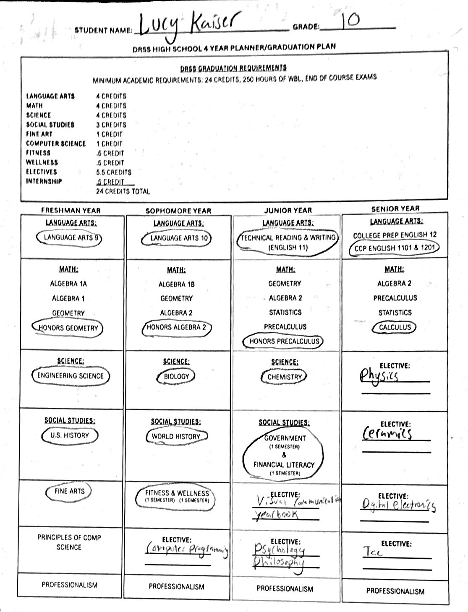

Student. Designer. Photographer.
LUCY KAISER.

An image of my four year plan. If I follow this plan I will graduate with the design and computer science career pathways completed.
Student. Designer. Photographer.

An image of my four year plan. If I follow this plan I will graduate with the design and computer science career pathways completed.